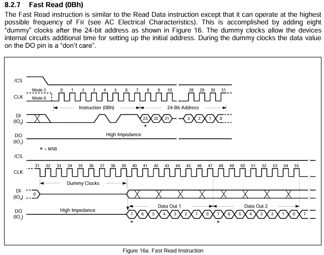
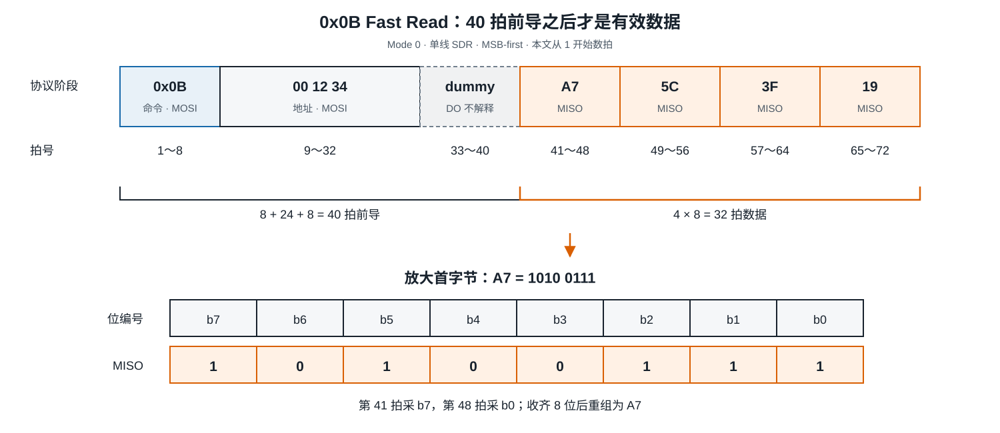
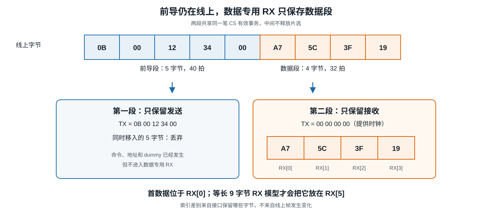
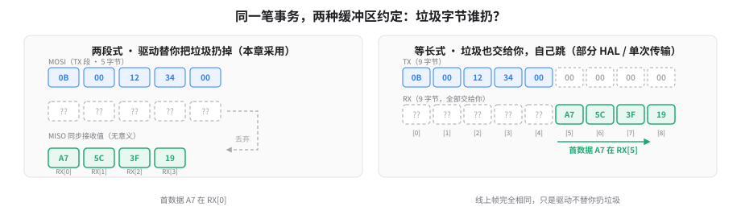
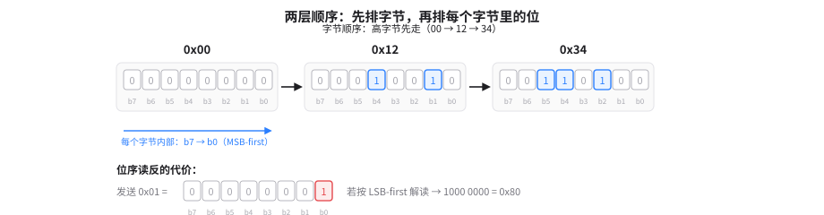
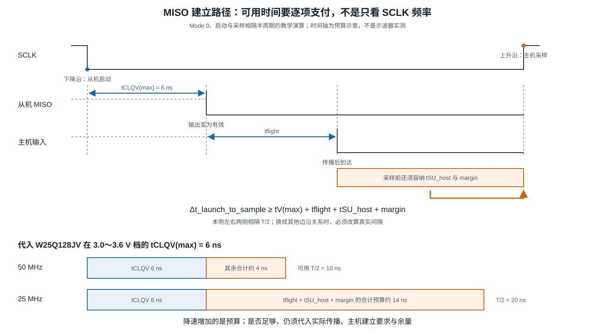

B-B.4.2 SPI 协议层与时序¶
所属章节：第五部 B. 总线协议 > B-B.4 SPI 总线
难度：[B→I] Beginner → Intermediate | 预计阅读时间：30 分钟
本节导读¶
B-B.4.1 已经逐拍说明 SPI 怎样移动一个位，本篇继续追问：主机把若干字节交给 SPI 控制器后，器件凭什么知道哪段是命令、哪段是地址、哪拍开始返回有效数据，软件又应从哪里取走结果？
答案不在 SPI 这个名称里。SPI 只提供片选、时钟和双向位流，具体器件手册才定义一帧的内容。
全文只跟随 W25Q128JV 串行 Flash 存储器的一条 Fast Read（快速读）命令 0x0B，从地址 0x001234 读取 4 字节。Flash 是掉电后仍能保存内容的存储芯片，本例只读，不改写其中内容。
竖线前是命令、24 位地址和 8 个 dummy clocks（等待时钟），竖线后是数据。?? 表示这些接收位不承担数据语义，不表示它们必为 00 或 FF。
本节覆盖：一笔 Fast Read 的完整帧、线上字节到接收缓冲区的映射、dummy 的作用、位序、AC（Alternating Current，动态开关条件下的交流特性）时序预算，以及同一事务的验证顺序。
Linux 对象与完整驱动代码归 B-B.4.3，工具操作归 B-B.4.4，Flash 产品接入与页写归 B-B.4.5。
1. 一笔事务的四个阶段¶
1.1 阶段划分与 40 拍前导¶
W25Q128JV 的 0x0B Fast Read 不是“发送命令后自动得到数据”。手册第 8.2.7 节和图 16a 规定了四个连续阶段：

- 命令，8 拍：主机在 MOSI 上发送
0x0B，说明要执行 Fast Read。 - 地址，24 拍：主机继续发送
00 12 34，选定首次读取地址0x001234。 - dummy，8 拍：主机继续提供时钟，让器件内部电路为初始地址建立留出时间；器件的 DO（Data Output，数据输出，接主机 MISO）在这段时间的值是 don't care，即不参与结果解释。
- 数据，每字节 8 拍：Flash 在 MISO 上输出数据，主机继续提供时钟并采样。每输出一字节，Flash 内部地址自动加一。
这里把“一个 SCLK 周期”简称为“一拍”。本例每条数据线每拍传 1 位，所以 8 拍组成 1 字节。
首个数据位之前共有：
第 41 拍(clock 40)才采入首字节 A7 的最高位。
读取 4 字节还需要 4 × 8 = 32 拍，因此整笔事务共 72 拍，CS 在这段时间保持有效。
手册图 16a 的 CLK 编号从 0 起，所以同一首字节标为 clock 40～47；本文从 1 起数，标为第 41～48 拍。只是编号起点不同，不是两种时序。
1.2 72 拍时间轴与 A7 的位序¶
下图先看四个阶段及各自拍号，再沿橙色数据段核对首字节；下排只放大 A7 的位序，不再引入第二套编号。

按拍号展开：第 1～8 拍发送 0B，第 9～32 拍发送 00 12 34，第 33～40 拍经过 dummy，第 41～48、49～56、57～64、65～72 拍分别接收 A7、5C、3F、19。
0xA7 = 1010 0111，MSB-first 的接收顺序是 1、0、1、0、0、1、1、1。第 41 拍的 1 是 b7，第 48 拍的 1 是 b0，收齐后才能重组为 A7。若误按最低位先发重组，会得到 E5，这正是选择 A7 作教学数据的原因：位序一旦弄反，结果明显不同。
CS 拉高表示本次串行指令结束，却不代表器件内部所有状态都被复位。页编程或擦除等内部操作可以在 CS 无效后继续。
2. 从线上帧到软件缓冲区¶
2.1 两段传输：TX 5 字节 + RX 4 字节¶
先把这笔事务的完整形状写成一行指令序列（器件手册的视角）：
而线上实际是两条线同时各走 9 个字节：MOSI 上前 5 个有意义、后 4 个是维持时钟的占位 00；MISO 上前 5 个是命令/地址阶段的同步接收值（无意义）、后 4 个才是数据：软件不直接面对这两条线。
控制器接口把一笔事务描述成两张清单：TX 单写明"MOSI 上要出现哪些字节"，RX 单写明"MISO 上哪些字节值得存进缓冲区"。
本章与 B-B.4.3 统一采用下面的两段描述：
TX 是发送缓冲区，RX 是接收缓冲区。两段合起来仍是上节同一笔 72 拍事务，中间不释放 CS。第一段产生前 40 拍，第二段产生后 32 拍。
数据专用接收缓冲区：只保存数据阶段移入字节的 RX。方括号内是从 0 开始的字节索引。本例驱动把前导段的同步接收值丢弃，因此
A7位于RX[0]，随后依次是RX[1]=5C、RX[2]=3F、RX[3]=19。
第二段虽然只关心接收，SPI 物理层仍在全双工移位，即两个方向在同一组时钟中同时移动数据。控制器发送零值不是 Flash 协议新增的数据字段，只是维持时钟的一种发送约定；Flash 则继续输出地址 0x001234 起的内容。
下图把“线上发生什么”和“软件保存什么”并排对齐。
重点不是多记一种结构，而是看清前导仍在线上存在，只是没有进入数据专用 RX。

因此，本例的数据定位可以独立完成：
这两个位置描述的是同一事件。
2.2 为什么有的代码却从 RX[5] 取数据¶
2.1 的两段式不是唯一接口形态。
由于 SPI 全双工，每发出一个字节物理上必同时收回一个字节，前导 40 拍收回的 5 个垃圾字节，驱动可以替你丢弃（两段式），也可以全部交给你自己跳（等长式）。

两种约定下的首数据位置不同，这就是有的代码从 RX[5] 取数的原因。
另一种常见接口把整笔事务放进等长的 TX/RX 缓冲区。读 4 字节时，两个缓冲区都为 9 字节：
前 5 个 RX 字节对应命令、地址和 dummy 的 40 拍，因此首数据位于 RX[5]。
这与本节的 RX[0] 不矛盾：线上帧没有改变，改变的是接口是否把前导阶段的接收字节也交给调用者。
阅读实际代码时先看缓冲区约定，不能看到 Fast Read 就机械写死 RX[0] 或 RX[5]。本章后续统一使用数据专用 RX；等长模型只作为识别其他代码的对照。
3. dummy 与两层顺序¶
3.1 dummy：字节无意义，拍数有意义¶
dummy 不是 SPI 事务的必备段，而是逐条指令定义的：器件从"收完最后一个输入位"到"第一个输出位有效"之间，如果有内部工作来不及完成，手册就为这条指令规定若干 dummy 时钟；没有这段工作的指令就一拍都不给。
同一颗 W25Q128JV 上，0x03 普通读没有 dummy，0x0B Fast Read 有 8 拍，读状态寄存器、读 JEDEC ID 也都没有。
它的本质是厂商把内部操作延迟换算成的等待拍数。
器件锁存地址后要完成译码、读出存储阵列、把结果送到输出寄存器，这段时间客观存在；SPI 里时钟在主机手里，从机无法让总线暂停，手册只能约定"地址给完后再白给 N 个时钟，之后的数据才算数"。
为什么前导给多给少都会错位？
因为 Flash 从 CS 拉低起就是一台数时钟的状态机：数够 8 拍当命令、再 24 拍当地址、再 8 拍 dummy，之后每 8 拍吐一个数据字节。它不知道软件的预期，主机给的拍数和手册不一致，两边的"格子"就错了位。
还要注意：dummy 期间传输的字节本身没有意义（发 0 发 FF 都一样），有意义的是它的拍数, 那是手册为器件内部操作规定好的最小等待。
若软件只给命令和地址便立即按数据解释，第 33～40 拍仍处于 dummy，第 41 拍才会出现 A7 的 b7。把 dummy 当成有效数据，接收结果就会整体错位；多发额外 dummy 也会把软件预期的数据边界推向别的位置。
普通 Read Data 0x03 可以用来核对这个差别：它同样发送 8 位命令和 24 位地址，但没有这 8 个 dummy clocks，所以首枚数据位从第 33 拍开始。0x03 与 0x0B 的差别不是笼统的“一个慢、一个快”，而是前导分别为 32 拍和 40 拍，且允许的最高频率不同。
dummy 也不能替代 Flash 的忙状态查询。读命令中的 dummy 由固定拍数结束；编程或擦除是否完成，则要按手册读取 BUSY（Erase/Write In Progress，擦除或写进行中）状态位。两者都可能表现为“暂时不能取结果”，完成条件却不同。
3.2 字节顺序 ≠ 位序¶
3.1 保证"第几拍是什么"不出错；这一节保证"每 8 拍的内容怎么排"不出错。
两者都是 0x0B 读回正确数据的必要条件。
地址 0x001234 是一个三字节字段（字段 = 一段有含义的连续字节）。
它上线时，"谁先走"有两个互相独立的决定：
- 字节顺序：三个字节之间，
00 → 12 → 34，高字节先走； - 位序：每个字节内部，
b7 → b0，即 MSB-first（Most SignificantBit first，最高有效位先发；B-B.4.1 已定义）。
注意 "MSB first" 在这里一词两用：对整个地址字段，MSB 指最高的那个字节（0x00）；对每个字节，MSB 指 b7。
手册用同一个词描述两层，但两层各自独立,知道一层推不出另一层，这就是"不能互相替代"的含义：

0x01 在 LSB-first（Least Significant Bit first，最低有效位先发）与 MSB-first 解释不一致时会变成 0x80，
但只有在把发送输出接回接收输入的回环中，或已知发送数据的受控条件下，才能用这个现象明确检查位序。
普通通信中收到 0x80 并不能单独证明位序错误。
4. 采样前的时间预算¶
协议帧（第 1～3 节）回答的是逻辑上第几拍该收到什么数据；这一节回答的是物理上那一拍到来时，MISO 上的位是否已经稳定
不稳定，逻辑正确的第 41 拍也可能采到过渡态，RX[0] 里的 A7 就是错的。
两者的关系可以这样记：协议帧保证"格子位置对"，时序预算保证"格子里的数已准备好"。
4.1 预算方程：数据到达时刻必须早于采样时刻¶
沿 MISO 走一遍完整的物理链路：
| 符号 | 中文读法 | 含义 | 通常谁决定 |
|---|---|---|---|
| tCLQV (或 tV) | 时钟低→Q有效 | Flash 收到时钟下降沿后，内部延迟多久才在引脚上放出有效数据 | 器件手册，改不了；取最大值（最坏情况） |
| tflight | 飞行时间 | 信号从 Flash 引脚走到主机引脚的传播延迟 | 硬件（走线长度）；软件只能等效补偿 |
| tSU_host | 主机建立时间 | 主机要求数据在采样边沿前至少稳定多久 | 芯片手册；部分 SoC 软件可配采样延迟寄存器 |
| margin | 设计裕量 | 留给时钟抖动、温漂、工艺偏差的余量 | 设计规则，通常取总预算的 20%～30% |
因此启动边沿到采样边沿的实际间隔至少要满足：
只有具体模式的启动沿与采样沿确实相隔半个周期时，左侧才能写成 T/2。
Mode 0 的数据在下降沿更新、上升沿采样，正好隔 T/2；换模式要先确认哪条沿启动输出，不能默认 T/2。
4.2 用两个频率算一遍，感受"预算够不够"¶
W25Q128JV Rev F 在 3.0～3.6 V 档给出 tCLQV(max) = 6 ns。
这个 6 ns 是什么概念？电信号在电路板里走大约 1 米也要 6 ns；Flash 内部从"收到时钟"到"把位放到引脚上"，要走的等效路程正好是这个量级，它不可能为零。
现在选两个教学频率代入（50 MHz 是器件标称 Fast Read 上限，25 MHz 是常见保守值）：
| 频率 | T/2（采样间隔） | 扣除 tCLQV=6 ns | 留给 tflight + tSU_host + margin |
|---|---|---|---|
| 50 MHz | 10 ns | 10 − 6 = 4 ns | 只剩 4 ns 走线 + 主机建立 + 裕量 |
| 25 MHz | 20 ns | 20 − 6 = 14 ns | 宽裕得多 |
4 ns 是什么概念？
10 cm 量级 PCB 走线约消耗 0.5～1 ns，RK3568 这类 SoC 的建立时间约 3～5 ns，50 MHz 时这两项加完已经逼近甚至超过 4 ns，预算大概率不成立。25 MHz 时 14 ns 明显宽裕。
所以"降速增加的是可用预算，不直接证明通信已经可靠"。50 MHz 能不能用，取决于走线多长、主机多快、留多少裕量；25 MHz 也不是免死金牌，只是留给误差的空间大了。

4.3 软件视角：预算不成立时，先动哪几个旋钮¶
对软件开发者来说，这一节的结论是一张行动清单：
| 预算项超标时 | 软件可调 | 具体操作 |
|---|---|---|
| T/2 太小（频率太高） | ✅ 是 | 降频：设备树 spi-max-frequency 从 50 MHz 降到 25 MHz 或更低 |
| tCLQV 不够 | ❌ 否 | 换 Flash 型号；或检查供电电压（3.3 V vs 1.8 V 档的 tCLQV 不同） |
| tflight 太大 | ⚠️ 间接 | 降频等效于给 tflight 让出空间；PCB 整改归硬件 |
| tSU_host 太紧 | ✅ 部分 | 查 RK3568 手册有无 采样延迟线（rx-sample-delay / rtsd） 寄存器，软件可调几纳秒 |
| margin 不够 | ✅ 是 | 降频是最直接的 margin 提升手段 |
诊断顺序（软件先做，再做硬件）：
- 先确认 CPOL/CPHA 配对正确（第 1 节），排除"采样沿选错了"这种逻辑错误；
- 再降频（
spi-max-frequency），看通信是否稳定，稳定了说明预算临界； - 再查 SoC 是否有采样延迟寄存器，微调采样点而不降频；
- 以上调尽仍不稳定，移交硬件检查走线、端接、驱动强度。
5. 换一条命令，必须重新数线数和拍数¶
前面的 0x0B 在命令、地址和数据阶段都使用单线，记作 1-1-1。
同一颗 Flash 的 0x6B Fast Read Quad Output（四线输出快速读）则记作 1-1-4：命令和地址仍走单线，数据改用 IO0～IO3 四根双向输入输出线。x-y-z 记法的三个数依次对应命令、地址和数据阶段的线数。
0x6B 同样具有 8 拍命令、24 拍地址和 8 拍 dummy，前导仍是 40 拍；变化发生在数据阶段。
读取 4 字节时：
所以“四线”只把本例数据阶段从 32 拍缩为 8 拍，不会把整笔事务的所有开销都除以四。
该命令还要求状态寄存器中的 QE（Quad Enable，四线功能使能）位已置 1；QE 是这条命令的前置条件，不改变前导阶段的线数。
这里不需要引入其他器件，也不需要背完整的 x-y-z 命令表。
读手册时逐阶段问三个问题即可：**控制信息走几条线、地址走几条线、数据走几条线，各自需要多少拍？**DDR（Double Data Rate，双倍数据速率）或八线协议还会改变每拍位数和时序关系，不能沿用本篇 SDR 结论。
6. 协议验证清单¶
协议验证应抓一笔完整事务，而不是只看 MISO 有没有跳变。
对本文实例，预期和判据都能提前写出：
- 看边界：CS 是否覆盖完整 72 拍，中途没有提前释放。
- 看命令：第 1～8 拍的 MOSI 是否按 MSB-first 重组为
0B。 - 看地址：第 9～32 拍是否依次为
00 12 34。 - 看前导：地址后是否恰好经过 8 个 dummy clocks，第 41 拍才进入数据。
- 看数据：第 41～48 拍是否采到
1010 0111，随后是否收齐5C 3F 19。 - 看软件交付：两段数据专用模型中，RX 是否为
A7 5C 3F 19；等长模型中，是否改从RX[5]取同样四字节。
这些检查分别定位不同层次。
命令解码不对，先查位序和采样模式；地址字节不对，查多字节顺序；数据整体错位，重新数 dummy 和前导；A7 被重组成 E5，在已知数据条件下检查位序；只有降速后恢复，再继续检查 AC 预算和信号质量。
全 00、全 FF 或非零数据都不能单独证明成功或指出唯一根因。
可靠判断必须同时满足：**帧格式与手册一致，有效偏移处的数据与已知内容一致，采样时序具备足够余量。**逻辑分析仪用于核对数字位流，示波器用于观察真实电平与边沿，二者不能互相替代。
本节总结 [B→I]¶
SPI 协议层的核心，是把器件手册翻译成一笔可逐拍核对的事务。本文 0x0B Fast Read 由 8 拍命令、24 拍地址和 8 拍 dummy 组成 40 拍前导，第 41 拍开始接收 A7 5C 3F 19，读四字节共 72 拍。
线上位置与软件偏移要分开描述。两段数据专用模型丢弃前导接收值，首数据在 RX[0]；等长全双工缓冲保留前导，首数据才在 RX[5]。拍数正确仍不够，输出有效、传播、主机建立和余量必须共同满足采样前的时间预算。换命令时重新数阶段、线数和拍数，比背“命令—地址—数据”模板更可靠。
本节自查¶
Q1. 本文 Fast Read 的首枚有效数据位为什么从第 41 拍开始？读四字节总共需要多少拍？
命令 8 拍、地址 24 拍、dummy 8 拍，合计 40 拍前导，因此下一拍才是首枚有效数据位。四字节数据还需 32 拍，整笔事务共 72 拍。
Q2. 为什么本文数据从 RX[0] 开始，而有的等长缓冲区代码从 RX[5] 开始？
本文采用两段描述，前导段的同步接收值被丢弃，数据专用 RX 只保存四字节数据，所以首字节在 RX[0]。等长模型保留命令、地址和 dummy 对应的五个接收字节，首字节因此在 RX[5]。线上都是 40 拍前导。
Q3. 第二段只关心接收，为什么控制器仍在 MOSI 上发送零值？
SPI 数据需要时钟才能逐位移出。第二段发送零值用于持续提供 32 拍，同时接收四字节；这些零值是传输约定，不是 Fast Read 新增的协议字段。
Q4. 0x03 与 0x0B 的首数据位置为什么不同？dummy 能否代替编程完成后的 BUSY 查询？
两者都有 8 拍命令和 24 拍地址，但 0x03 没有 Fast Read 的 8 个 dummy clocks，所以首数据从第 33 拍开始，0x0B 则从第 41 拍开始。dummy 由固定拍数结束，编程或擦除是否完成要读 BUSY 状态，不能互相替代。
Q5. 地址 0x001234 的字节顺序与 A7 的位序分别是什么？把 A7 误读成 E5 说明应检查什么？
地址按 00、12、34 发送，每个字节内部按 MSB-first 从 b7 到 b0 发送。A7=1010 0111，若按相反位序重组会得到 E5；在已知数据的受控条件下，应检查主从位序配置是否一致。
Q6. 50 MHz 与 25 MHz 的教学演算为什么分别留下约 4 ns 和 14 ns 的合计预算？能否据此宣布 50 MHz 不可用？
Mode 0 本例的启动与采样相隔半周期。50 MHz 半周期为 10 ns，减去 tCLQV(max) 6 ns 后约剩 4 ns；25 MHz 半周期为 20 ns，约剩 14 ns。余下还要容纳传播、主机建立和余量，未代入实际参数前不能宣布任一频率必然可用或不可用。
Q7. 0x6B 为什么读四字节只需 48 拍，却不能说整笔事务提速四倍？
它与 0x0B 一样有 40 拍单线前导，但四线数据阶段每拍传 4 位，四字节只需 8 拍，总计 48 拍。四倍只描述数据阶段的理想位数关系，命令、地址、dummy 和其他事务开销并未全部除以四。
Q8. 如果逻辑分析仪解码得到 A7 5C 3F 19，为什么仍可能要查示波器？
解码结果支持数字位流符合当前预期，但不能完整揭示接收端电平裕量、过冲、振铃和边沿形态。若通信随频率、板卡或探测条件变化，还要用示波器检查模拟质量与时序余量。